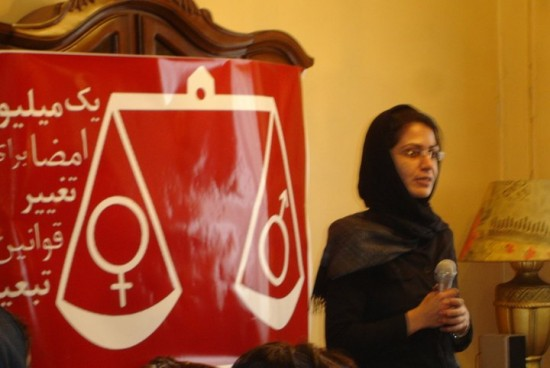
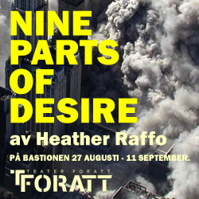
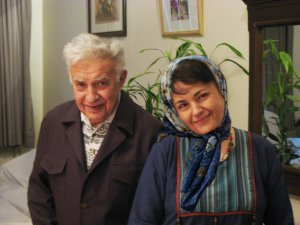
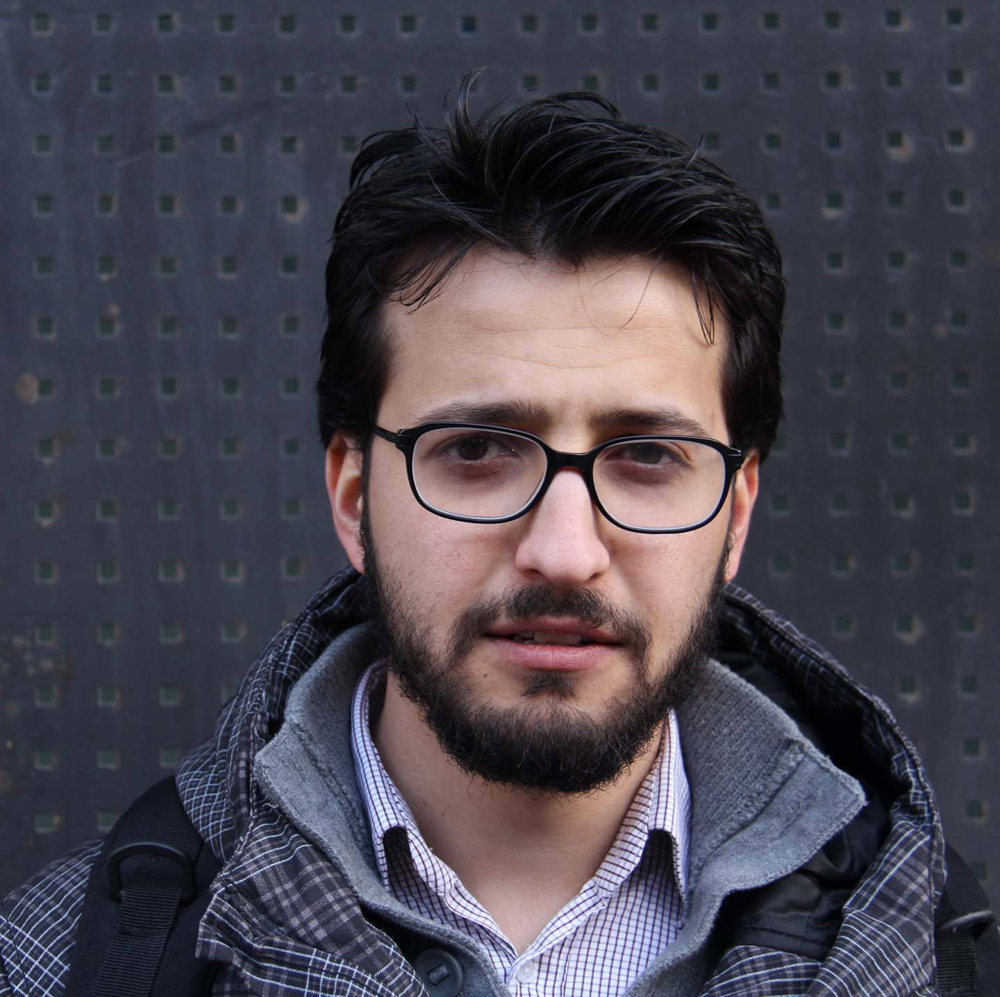
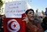
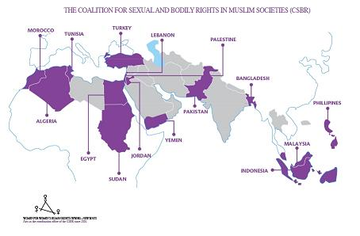
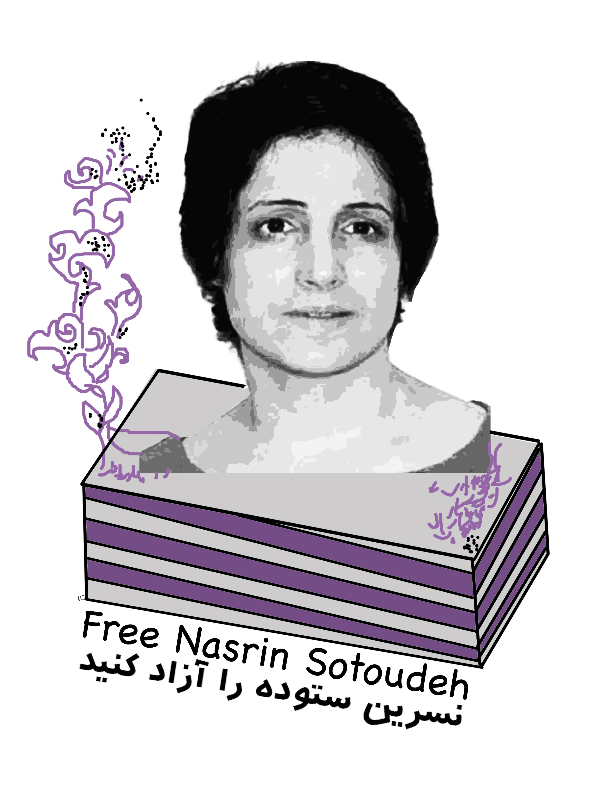
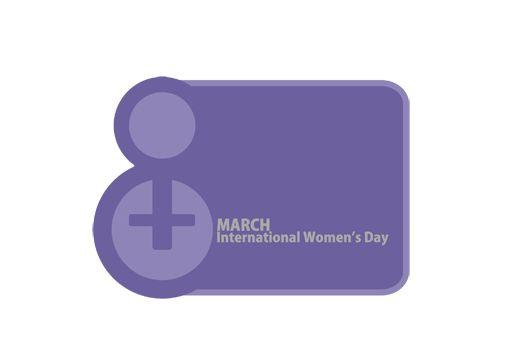

|
|
Tribune
Latest update – Monday 17 March 2014.
Articles in this section
- 17 March 2014

- 11 November 2012

- 31 December 2011

Timeline of Events Following Bahareh Hedayat’s Arrest
- 7 October 2011

Shahrzad Amin
- 7 September 2011

Women’s Rights Activists Tell of Their Presence in the Streets in Protest against Violence against Women
- 26 July 2011
- 27 June 2011

500 Women and Civil Rights Activists Call for the Immediate Release of Mansoureh Behkish
- 4 June 2011

On the Death of Haleh Sahabi, Women’s Rights Activist and Member of Mothers for Peace
By Fariba Amini
- 30 May 2011

Nahid Jafari - Translated by Roja Bandari
- 22 April 2011

by Amin Parsa
- 8 March 2011

Guardian Opion Piece by Shirin Ebadi on the Situation of Nasrin Sotoodeh
- 30 January 2011

Statement by Iranian Women’s Rights Activists
- 6 January 2011

By: Amir Yagoubali
- 9 November 2010

International Campaign to Promote Sexual and Bodily Rights across Muslim Societies
- 5 November 2010

- 28 October 2010

- 30 September 2010

400 Women’s Rights Activists Call for Release of Human Rights Lawyer
- 28 September 2010

- 28 June 2010

A letter to Zeynab Jalalian
- 11 June 2010

- 16 May 2010

- 9 April 2010

By: Faranak Farid
- 9 April 2010

By: Rezvan Moghaddam
- 12 March 2010

- 10 March 2010

- 8 March 2010
- 17 February 2010

- 9 February 2010

- 11 January 2010

By: Maryam Hosseinkhah
- 26 November 2009
An Examination of Policies Related to Women During the First Four Years of Ahmadinejad’s Presidency
By: Mahboube Hosseinzadeh
|